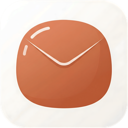

FascikelFascikel netriedi poštu do zložiek, ale do prípadov. Nástěnka ukáže, čo horí, na čo čakáš ty a čo je len na vedomie — bez klikania cez stovky e-mailov.
Nástěnka je postavená na tom, čo od pošty naozaj potrebuješ: vedieť, čo je urgentné, na čo sa čaká a čo môže počkať.
Hoří, Čaká na teba, Otázka, Čakáš na nich, Rieši sa a Informácie. Každý stĺpec má vysvetlenie s príkladom.
Databáza aj fulltextový index sú šifrované. Kľúč sa odvodzuje z tvojho profilu, nie z cloudu.
Hľadanie v celej histórii bez internetu — vlastný index, nie dotazy na server.
Prihlásenie v prehliadači cez OAuth, bez app password. IMAP/SMTP a POP3 účty pridáš ručne.
Logika v Ruste, tenká UI vrstva. Synchronizácia s IDLE a CONDSTORE, prvý sync beží na pozadí.
Newsletter, oznámenie alebo spam — s vysvetlením, prečo. Pravidlá podľa adresy, domény či predmetu a osobná poistka.
Rozpísaný mail sa uloží ako koncept, odoslanie naplánuješ na konkrétny čas. Priložíš prílohy aj podpis.
Pracovný aj osobný účet v jednom okne, s odznakom účtu na každej karte prípadu.
Fascikel nemá server, ktorý by videl tvoje správy. Synchronizuje priamo s poskytovateľom a všetko ukladá lokálne.
SQLCipher s kľúčmi odvodenými z tvojho profilu. Bez kľúča sa nedá otvoriť ani skopírovaný súbor.
Žiadne analytické servery, žiadne reklamy. Jediné spojenia sú na tvojho poskytovateľa pošty.
OAuth tokeny sú šifrované v systémovom úložišti, nikdy v logu ani v obyčajnom súbore.
Inštalátor je distribuovaný priamo z GitHubu. Aktuálna verzia: najnovšia.
Klikni na „Stiahnuť pre Windows“ — stiahne sa najnovšia verzia pre x64.
Build zatiaľ nie je podpísaný, takže SmartScreen môže ukázať „Neznámy vydavateľ“. Zvoľ „Viac informácií“ → „Predsa spustiť“.
V appke zvoľ Přidat účet → Sign in with Microsoft alebo Google, prípadne vyplň IMAP/SMTP.
%APPDATA%\app.fascikel.desktop\logs\fascikel.log — pošli mi posledných pár riadkov.